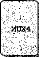

0x00000000
0x00000000
0x00000000
0x00000100
0x00000100
OxOOOOaOOO
p p i s b s e e e % % %
|
Changes |
to memory: |
|
|
0x00e8: |
0x00000000 |
0x000000f8 |
|
OxOOec: |
0x00000000 |
0x0000003d |
|
OxOOfO: |
0x00000000 |
0x00000014 |
|
0x00f4: |
0x00000000 |
0x00000004 |
|
0x00f8: |
0x00000000 |
0x00000100 |
|
OxOOfc: |
0x00000000 |
0x00000011 |
模拟输出的第一行总结了执行以及PC和程序状态的结果值。模拟器只打印出在模拟过程 中被改变了的寄存器或存储器中的字。左边是原始值（这里都是0)，右边是最终的值。从输出 中我们可以看到，寄存器％eax的值为Oxabcd,即传给子函数Sum的四元素数组的和。另外， 我们还能看到栈从地址0x100开始，向下增长，栈的使用导致存储器地址0xe8〜Oxfc发生 了变化。这个距离可执行代码的最大地址0x7c还差得很远。
麵 练习题4.3根据下面的C代码，用Y86代码来实现一个递归求和函数rSum ：
int rSum(int *Start , int Count)
{
if (Count <= 0) return 0;
return *Start + rSum(Start+l , Count-1);
>
在一台IA32机器上编译这段C代码，然后再把那些指令翻译成Y86的指令 ， 这样做可能会很有帮助。 ®练习题4.4修改Sum函数的Y86代码（图4-6),实现函数AbsSrnn,计算一个数组的绝对值的和。
在内循环中使用条件跳转指令。
®练习题4.5修改Sum函数的Y86代码（图4-6),实现函数AbsSum,计算一个数组的绝对值的和。
在内循环中使用条件传送指令。
一些 Y86 指令的详情
大多数Y86指令是以一种直接的方式修改程序状态的 ， 所以定义每条指令想要达到的结果 并不困难。不过，两个特别的指令组合需要特别注意一下。
pushl指令会把栈指针减4,并且将一个寄存器值写入存储器中。因此，当执行pushl %esp指令时 ， 处理器的行为是不确定的，因为要入栈的寄存器会被同一条指令修改。通常有两 种约定 ： 1)压入％esp的原始值，2)压入减去4的％63?的值。
对于Y86处理器来说，我们釆用和IA32—样的方法，就像下面这个练习题确定的那样。
®练习题4.6确定IA32处理器上指令p US hl% eS p的行为。我们可以通过阅读Intel关于这条指令的 •文档来了解它们的做法，但更简单的方法是在实际的‘机器上做个实验。C编译器正常情况下是不会产 生这条指令的 ， 所以我们必须用手工生成的汇编代码来完成这一任务。下面是我们写的一个测^^程序 (网络旁注ASM: EASM,描绘任何写C代码和手写汇编代码结合的程序）： .
. teXt ' . 1 • .... ： r. i ■«
.globl pushtest ’、
pushtest :
pushl %ebp
movl %esp, %ebp
movl %esp, %eax Copy stack pointer
pushl %esp Push stack pointer
popl °/ 0 edx Pop it back
subl °/ 0 edx,%eax -Subtract uev ； from old stack pointer
leave RestAire stack & frame pointers
ret
在实验中，我们发现函数pushtest总是返回0,这表示在IA32中pughl%esp指令的行为是怎样的呢？ 对 pop l% eS p指令也有类似的歧义。可以将％esp置为从存储器中读出的值，也可以置为 加上4后的栈指针。同练习题4.6—样，让我们做个实验来确定IA32机器是怎么处理这条指令 的，然后Y86机器就釆用同样的方法。
练习题4.7下面这个汇编函数让我们确定IA32上指令popl%esp的行为 ：
1 .text
.2 .globl poptest
poptest:
A pushl %ebp
movl °/ 0 esp, %ebp
Push test value
Pop to stack pointer
Set popped va'lue as return value
Restore stack and frame pointers
pushl $0xabcd
popl %esp
B movl %esp, %eax
leave
]0 ret
我们发现函数总是返回Oxabcd。这表示popl%e S p的行为是怎样的？还有什么其他Y86指令也有相 同的行为吗？
正确了解细节： X86 模型间的不一致
练习题4.6和4.7是可以帮助我们确定对于压入和弹出栈指针指令的一致惯例。看上去似乎 没有理由会执行这样两种操作,那么一个很自然的问题就是“为什么要担心这样一些吹毛求疵的 细节呢？ ”
从Intel关于POP指令的文档[29]的节选中，可以学到几个关于这个一致的重要性的有用教训： 对于IA-32处理器 ， 从Intel 286开始,PUSH ESP指令将ESP寄存器的值压入桟中 ，
就像它存在于这条指令被执行之前。（对于Intel 64体系结构、IA-32体系结构的实地址 模式和虚8086模式来说也是这样。）对于Intel® 8086处理器 ， PUSH SP将SP寄存器的 新值压入桟中（也就是减去 2 之后•的值)。
这条注释说明当执行压入栈指针寄存器指令时，不同型号的x86处理器会做不同的事情。有 些会压入原始的值，而有些会压入减去后的值。（有趣的是，对于弹出栈指针寄存器没有类似的 歧义。）这种不一致有两个缺点：
•它降低了代码的可移植性。取决于处理器模型,程序可能会有不同的行为。虽然这样特殊 的指令并不常见，但是即使是潜在的不兼容也可能带来严重的后果。
•它增加了文档的复杂性。正如在这里我们看到的那样 ， 需要一个特别的说明来澄清这些不 同之处。即使没有这样的特殊情况 , x86文档已经够复杂的了。
因此我们的结论是，从长远来看,提前了解细节 ， 力争保持完全的一致能够节省很多的麻烦。
逻辑设计和硬件控制语言 HCL
在硬件设计中 ， 用电子电路来计算对位进行运算的函数，以及在各种存储器元素中存储位。 大多数现代电路技术都是用信号线上的高电压或低电压来表示不同的位值。在当前的技术中，逻 辑1是用1.0伏特左右的髙电压表示的，而逻辑0是用0.0伏特左右的低电压表示的。要实现一 个数字系统需要三个主要的组成部分：计算对位进行操作的函数的组合逻辑、存储位的存储器元 素，以及控制存储器元素更新的时钟信号。
本节简要描述这些不同的组成部分。我们还将介绍HCL (Hardware Control Language,硬 件控制语言)，用这种语言来描述不同处理器设计的控制逻辑。在此我们只是简略地描述HCL, HCL完整的参考请见网络旁注ARCH : HCL。
现代逻辑设计
曾经，硬件设计者通过描绘示意性的逻辑电路图来进行电路设计（最早是用纸和笔，后来是 用计算机图形终端）。现在，大多数设计都是用硬件描述语言 （Hardware Description Language, HDL) 来表达的。 HDL 是一种文本表示，看上去和编程语言类似，但是它是用来描述硬件结构 而不是程序行为的。最常用的语言是 Verilog, 它的语法类似于 C; 另一种是 VHDL, 它的语法 类似于编程语言 Ada 。这些语言本来都是用来表示数字电路的模拟模型的。 20 世纪 80 年代中期， 研究者开发出了逻辑合成 （logic synthesis) 程序，它可以根据 HDL 的描述生成有效的电路设计。 现在有许多商用的合成程序，已经成为产生数字电路的主要技术。从手工设计电路到合成生成的 转变就好像从写汇编程序到写高级语言程序，再用编译器来产生机器代码的转变一样。
我们的 HCL 语言只表达硬件设计的控制部分，只有有限的橾作集合，也没有模块化。不 过，正如我们会看到的那样，控制逻辑是设计微处理器中最难的部分。我们已经开发出了将 HCL 直接翻译成 Verilog 的工具，将这个代码与基本硬件单元的 Verilog 代码结合起来，就能产 生 HDL 描述，根据这个 HDL 描述就可以合成实际能够工作的微处理器。通过小心地分离、设 计和测试控制逻辑，通过适当的努力，我们就能创建出一个可以工作的微处理器。网络旁注 ARCH:VLOG 介绍了如何能产生 Y98 处理器的 Verilog 版本。
逻辑门
逻辑门是数字电路的基本计算元素。它们产生的输出，等于它们输入位值的某个布尔函数。 图4-9是布尔函数AND、OR和NOT的标准符号，C语言中运算符（2*1.9节)的逻辑门下面是 对应的HCL表达式：AND用&&表示，OR用||表示，而NOT用！表示。我们用这些符号而不 用C语言中的位运算符&、|和〜，是因为逻辑门只对单个位的数进行操作，而不是整个字。虽 然图中只说明了 AND和OR门的两个输入的版本，但是常见的是它们作为/r路操作，《>2。不 过，在HCL中我们还是把它们写作二元运算符，所以，三个输入的AND门,输入为a、b和c, 用HCL表示就是a&&b&&c。
逻辑门总是活动的（active)。一旦一个门的输入变化了，在很短的时间内，输出就会相应地 变化。
And Or Not
1 out a out :
输出 =a&&b 输出 =a||b 输出 =!a 、
图 4-9 逻辑门类型。每个门产生的输出等于它输入的某个布尔函数
4.2.2组合电路和HCL布尔表达式
将很多的逻辑门组合成一个网，就能构建计算块（computational block),称为组 合电路 (combinational circuits) 0 构建这些网有两条限制：
•两个或多个逻辑门的输出不能连接在一起。否则它们可能会使线上的信号矛盾，可能会导 致一个不合法的电压或电路故障； •这个网必须是无环的。也就是在网中不能有路径经过一系列的门而形成一个回路，这样的 回路会导致该网络计算的函数有歧义。
图4-10是一个我们觉得非常有用的简单组合电路的例子。它有两个输入a和b,有唯一的 输出eq,当a和b都是1 (从上面的AND门可以看出）或都是0 (从下面的AND门可以看出） 时,输出为1。用HCL来写这个网的函数就是：
图4-10检测位相等的组合电路。 当输入都为0或都为1时， 输出等于1
bool eq = (a && b) II (!a && !b);
这段代码简单地定义了位级（数据类型bool表明了这一点）
信号eq,它是输入a和b的函数。从这个例子可以看出 HCL使用了 C语言风格的语法，‘J将一个信号名与一个表 达式联系起来。不过同C不一样，我们不把它看成执行了一 次计算并将结果放人存储器中某个位置。相反，它只是用一 个名字来称谓一个表达式。
_练习题4.8写出信号xor的HCL表达式，xor就是异或，
输入为a和b。信号xor和上面定义的eq有什么关系？
图4-11给出了另一个简单但很有用的组合电路，称为多路复用器（multiplexor,通常称为 “MUX”)。多路复用器根据输人控制信号的值 ， 从一组不同的数据信号中选出一个。在这个单个 位的多路复用器中，两个数据信号是输入位a和b,控制信号是输入位s。当s为1时，输出等 于a ;而当s为0时，输出等于b。在这个电路中，我们可以看出两个AND门决定了是否将它 们相对应的数据输入传送到OR门。当s为0时，上面的AND门将传送信号b (因为这个门的 另一个输入是！ s),而当s为1时，下面的AND门将传送信号a。接下来，我们来写输出信号 的HCL表达式 ， 使用的就是组合逻辑中相同的操作 ：
图4-11单个位的多路复用器电路。如果 控制信号s为1，则输出等于输人 a;当s为0时，输出等于输入b
bool out = (s && a) 丨丨 (!s && b);
HCL表达式很清楚地表明了组合逻辑电路和C语言 中逻辑表达式的对应之处。它们都是用布尔操作来对输 入进行计算的函数。值得注意的是，这商种表达计算的 方法之间有以下区别：
•因为组合电路是由一系列的逻辑门组成,它的属性 是输出会持续地响应输入的变化。如果电路的输 入变化了，在一定的延迟之后，输出也会相应地变 化。相比之下，C表达式只会在程序执行过程中被 遇到时才进行求值。
•C的逻辑表达式允许参数是任意整数 ， 0表示 FALSE,其他任何值都表示TRUE。而逻辑门只对位值0和1进行操作。
C的逻辑表达式有个属性就是它们可能只被部分求值。如果一个AND或OR操作的结果只 用对第一个参数求值就能确定，那么就不会对第二个参数求值了。例如，这样一个C表达式：
(a && !a) && func(b,c)
这里函数fimc是不会被调用的，因为表达式（a&&!a )求值为0。而组合逻辑没有部分求 值这条规则，逻辑门只是简单地响应输入的变化。
4.2.3 字级的组合电路和 HCL 整数表达式
通过将逻辑门组合成大的网;可以构造出能计算更加复杂函数的组合电路。通常，我们设计 能对数据字（word)进行操作的电路。有一些位级信号，代表一个整数或一些控制模式。例如, 我们的处理器设计将包含有很多字，字的大小为4位和32位，代表整数、地址、指令代码和寄 存器标识符。
执行字级计算的组合电路裉据输人字的各个位，用逻辑门来计算输出字的各个位。例如 图4-12中的一个组合电路，它测试两个32位字A和B是否相等。也就是，当且仅当A的每一 位都和B的相应位相等时，输出才为1。这个电路是用32个图4-10中所示的单个位相等电路实 现的。这些单个位电路的输出用一个AND门连起来，形成了这个电路的输出。
a)位级实现 b)字级抽象
图4-12字级相等测试电路。当字A的每一位与字B中相应的位均相等时，输出等于1。字级相等是 HCL中的一个操作
在HCL中，我们将所有字级的信号都声明为int,不指定字的大小。这样做是为了简单。 在全功能的硬件描述语言中，每个字都可以声明为有特定的位数。HCL允许比较字是否相等, 因此图4-12所示的电路的函数可以在字级上表达成：
bool Eq = (A == B);
这里参数A和B是int型的。注意我们使用和C语言中一样的语法习惯，表示赋值，而 ‘==’是相等运算符。
如图4-12中右边所示，在画字级电路的时候，我们用中等粗度的线来表示携带字的每个位 的线路，而用虚线来表示布尔信号结果。
_练习题4_9假设你用练习题4.8中的异或电路而不是位级的相等电路来实现一个字级的相等电路。设 计一个32位字的相等电路需要32个字级的异或电路，另外还要两个逻辑门。
图4-13是字级的多路复用器电路。这个电路根据控制输入位s,产生一个32位的字Out, 等于两个输入字A或者B中的一个。这个电路由32个相同的子电路组成，每个子电路的结构都 类似于图4-11中的位级多路复用器。不过这个字级的电路并没有简单地复制32次位级多路复用 器，它只产生一次！ s,然后在每个位的地方都重复使用它，从而减少反相器或非门（inverters) 的数量。 、
处理器中会用到很多种多路复用器。使得我们能根据某些控制条件，从许多源中选出一个 字。在HCL中，多路复用函数是用情况表达式（case expression)来描述的。情况表达式的通用 格式如下：
select-1 select Jl
exprA
exprJl
select Jc
exprJc
这个表达式包含一系列情况，每种情况f都有一个布尔表达式叫和一个整数表达式exrpr,.，前 者表明什么时候该选择这种情况，后者指明的是得到的值。
同C语言的switch语句不同，我们不要求不同的选择表达式之间互斥。从逻辑上讲，这 些选择表达式是顺序求值的，且第一个求值为1的情况会被选中。例如，图4-13中的字级多路 复用器用HCL来描述就是：
int Out =[
在这段代码中，第二个选择表达式就是1,表明如果前面没有情况被选中，那就选择这种情 况。这是HCL中一种指定默认情况的方法。几乎所有的情况表达式都是以此结尾的。
A-
—Out
out,
out,,
out A
A
int Out
a)位级实现 b)字级抽象
图 4-13
字级多路复用器电路。当控制信号s为1时，输出会等于输入字A,否则等于B。HCL中用 情况（case)表达式来描述多路复用器
允许不互斥的选择表达式使得HCL代码的可读性更好。实际的硬件多路复用器的信号必 须互斥，它们要控制哪个输入字应该被传送到输出，就像图4-13中的信号s和！ s。要将一个 HCL情况表达式翻译成硬件，逻辑合成程序需要分析选择表达式集合，并解决任何可能的冲突， 确保只有第一个满足的情况才会被选中。
选择表达式可以是任意的布尔表达式，可以有任意多的情况。这就使得情况表达式能描述带 复杂选择标准的、多种输入信号的块。例如，考虑图4-14中所示的四路复用器的图。这个电路 根据控制信号si和sO,从4个输人字A、B、C和D中选择一个，将控制信号看作一个两位的 二进制数。我们可以用HCL来表示这个电路，用布尔表达式描述控制位模式的不同组合：
A
B
C
D
o 1 o 1 0 0 1-1

■ Out 4
int Out4 =[
!sl && !sO
!sl
!sO
四路复用器。控制信 号si和sO的不同组 合决定了哪个数据输 入会被传送到输出
右边的注释（任何以#开头到行尾结束的文字都是注释）表图4-14 明了 si和sO的什么组合会导致该种情况会被选中。可以看 到选择表达式有时可以简化，因为只有第一个匹配的情况才会 被选中。例如，第二个表达式可以写成！si,而不用写得更完 整！ S1&&S0,因为另一种可能si等于0已经出现在了第一个选 择表达式中了。类似地，第三个表达式可以写作！ sO,而第四个可以简单地写成1。
来看最后一tW子，假设我们想设计一^辑电路来找一组字A、B和C中的最/JMI,如下图所示
|
G |
| 嘗 ^ |
|
B |
%XN3 |
|
A |
-Min3
用HCL来表达就是
int Min3
A < = B && A < = C B < = A && B < = C
1
_练习题4.10写一个电路的HCL代码，对于输入字A、B和C,选择中间值。也就是，输出等于三个
输入中居于最小值和最大值之间的那个字。
组合逻辑电路可以设计成在字级数据上执行许多不同类型的操作。具体的设计已经超出了 我们讨论的范围。 算术 / 逻辑单元 （ALU)是一种很重要的组合电路，图4-15是它的一 个抽象 图示。 这个电路有三个输入：标号为A和B的两个数据输人，以及一个控制输入。根据控制输 入的设置，电路会对数据输人执行不同的算术或逻辑操作。可以看到,这个ALU中的四个操作 对应于Y86指令集支持的四种不同的整数操作，而控制值和这些操作的功能码相对应（图4-3)。 我们还注意到减法的操作数顺序，是输入B减去输入A。之所以这样做，是为了使这个顺序与 subl指令的参数顺序一致。
-x-y
3
X+Y
►X&Y
图4-15算术/逻辑单元（ALU)。根据函数输入的设置，该电路会执行四种算术和逻辑运算中的一种
4.2.4集合关系
在处理器设计中，很多时候都需要将一个信号与许多可能匹配的信号做比较，以此来检测正 在处理的某个指令代码是否属于某一类指令代码。下面来看一个简单的例子，假设想从一个两位 信号code中选择高位和低位,来为图4-14中的四路复用器产生信号si和sO,如下图所示：
在这个电路中，两位的信号code就可以用来控制对4个数据字A、B、C和D做选择。根 据可能的code值，可以用相等测试来表示信号si和sO的产生 ：
bool si = code == 2 I I code == 3;
bool sO = code == 1 I I code == 3;
还有一种更简洁的方式来表示这样的属性：当code在集合{2，3}中si为1,而code在 集合{1,3}中sO为1:
bool si = code in { 2, 3 };
bool sO = code in { 1, 3 };
判断集合关系的通用格式是：
iexpr in {iexpr^ iexpr 2 , ..., iexpr k )
这里被测试的值 iexpr 和待匹配的值 iexpr! 〜 iexpr k 都是整数表达式。
4.2.5存储器和时钟
组合电路从本质上讲，不存储任何信息。它们只是简单地响应输入信号，产生等于输人的某 个 函数的输出。为了产生时 序电路 （sequential circuit),也就是有状态并且在这个状态上进行计 算的系统，我们必须引入按位存储信息的设备。存储设备都是由同一 个时钟 控制，时钟是一个周 期性信号,决定什么时候要把新值加载到设备中。考虑两类存储器设备：
•时钟寄存器（简称 寄存器 ）存储单个位或字。时钟信号控制寄存器加载输入值。
•随机访问存储器（简称 存储器 ）存储多个字，用地址来选择该读或该写哪个字。随机访问 存储器的例子包括：1)处理器的虚拟存储器系统，硬件和操作系统软件结合起来使处理 器可以在一 个很大 的地址空间内访问任意的字 ； 2)寄存器文件，在此，寄存器标识符作 为地址。在IA32或Y86处理器中，寄存器文件有8个程序寄存器（％eax、％ecx等）。 正如我们看到的那样，在说到硬件和机器级编程时，“寄存器”这个词是两个有细微差别的 事情。在硬件中，寄存器直接将它的输入和输出线连接到电路的其他部分。在机器级编程中，寄 存器代表的是CPU中为数不多的可寻址的字，这里的地址是寄存器ID。这些字通常都存在寄存 器文件中，虽然我们会看到硬件有时可以直接将一个字从一个指令传送到另一个指令，以避免先 写寄存器文件再读出来的延迟。需要避免歧义时，我们会分别称呼这两类寄存器为“硬件寄存 器”和“程序寄存器”。
图4-16更详细地说明了一个硬件寄存器以及它是如何工作的。大多数时候，寄存器都保持 在稳定状态（用x表示），产生的输出等于它的当前状态。信号沿着寄存器前面的组合逻辑传 播，这时，产生了一个新的寄存器输入（用y表示)，但只要时钟是低电位的，寄存器的输出就 仍然保持不变。当时钟变成高电位的时候，输入信号就加载到寄存器中，成为下一个状态y,直 到下一个时钟上升沿，这个状态就一直是寄存器的新输出。关键是寄存器是作为电路不同部分中 的组合逻辑之间的屏障。每当每个时钟到达上升沿时，值才会从寄存器的输入传送到输出。我们 的Y86处理器会用时钟寄存器保存程序计数器(PC),条件代码（CC)和程序状态（Stat)。
状态=y
输出=y
状态=x
输入=y
输出 =X
时钟上升沿
val A srcA
读端口
valB
srcB
《valW
.dstW写端口
下面的图展示了一个典型的寄存器文件
图4-16寄存器操作。寄存器输出会一直保持在当前寄存器状态上，直到时钟信号上升。当时钟上升 时，寄存器输入上的值会成为新的寄存器状态
寄存器文件有两个 读端口 （A 和 B),还有一个 写端口 （W)。这样一个 多端口 随机访问存储 器允许同时进行多个读和写操作。图中所示的寄存器文件中，电路可以读两个程序寄存器的值， 同时更新第三个寄存器的状态。每个端口都有一个地址输入，表明该选择哪个程序寄存器，另外 还有一个数据输出或对应该程序寄存器的输入值。地址是用图4-4中编码表示的寄存器标识符。 两个读端口有地址输入srcA和srcB (“source A”和“source B”的缩写）和数据输出valA和 valB (“value A” 和 “value B” 的缩写）。写端口有地址输入 dstW (“destination W” 的缩写), 以及数据输入valW (“value W”的缩写)。
虽然寄存器文件不是组合电路，因为它有内部存储。不过，在我们的实现中，从寄存器文件 读数据就好像它是一个以地址为输入、数据为输出的一个组合逻辑块。当srcA或srcB被设成 某个寄存器ID时，在一段延迟之后，存储在相应程序寄存器的值就会出现在valA或valB上。 例如，将srcA设为3,就会读出程序寄存器％ebx的值，然后这个值就会出现在输出valA上。
向寄存器文件写入字是由时钟信号控制的，控制方式类似于将值加载到时钟寄存器。每次时 钟上升时，输入valW上的值会被写入输入dstW上的寄存器ID指示的程序寄存器。当dstW 设为特殊的ID值OxF时，不会写任何程序寄存器。由于寄存器文件既可以读也可以写,一个很 自然的问题就是“如果我们试图同时读和写同一个寄存器会发生什么?• ”答案简单明了：如果更 新一个寄存器，同时在读端口上用同一个寄存器ID,我们会看到一个从旧值到新值的变化。当 我们把这个寄存器文件加入到处理器设计中，我们保证#考虑到这个属性的。
处理器有一个随机访问存储器来存储程序数据，如下图所示：
数据输出
error < T
•时钟
準雜器
读-一
写
以及一个读的数据输出。同寄存器文件
地址数据输入
这个存储器有一个地址输入，一个写的数据输入，
一样，从存储器中读的操作方式类似于组合逻辑：如果我们在输入address上提供一个地址, 并将write控制信号设置为0,那么经过一些延迟之后，存储在那个地址上的值会出现在输出 data上。如果地址超出了范围，error信号会设置为1,否则就设置为0。写存储器是由时钟 控制的：我们将address设置为期望的地址，将data in设置为期望的值，而write设置为 1。然后当我们控制时钟时，只要地址是合法的，就会更新存储器中指定的位置。对于读操作来 说，如果地址是不合法的，error信号会被设置为1。这个信号由组合逻辑产生，因为所需要的 边界检查纯粹就是地址输入的函数，不涉及保存任何状态。
现实的存储器设计
真实微处理器中的存储器系统比我们在设计中假想的这个简单的存储器要复杂得多。它是由 几种形式的硬件存储器组成的，包括几种随机访问存储器和磁盘，以及管理这些设备的各种硬件 和软件机制。存储器系统的设计和特点在第 6 章中描述。
不过，我们简单的存储器设计可以用于较小的系统，它提供了更复杂系统的处理器和存储器 之间接口的抽象。
我们的处理器还包括另外一个只读存储器，用来读指令。在大多数实际系统中，这两个存储 器被合并为一个具有双端口的存储器：一个用来读指令，另一个用来读或者写数据。
Y86 的顺序实现
现在已经有了实现Y86处理器所需要的部件。首先，我们讲一个SEQCseqiieiitial”顺序的） 处理器。每个时钟周期上，SEQ执行处理一条完整指令所需的所有步骤。不过，这需要一个很 长的时钟周期时间，因此时钟周期频率会低到不可接受。我们开发SEQ的目标就是提供实现最 终目标的第一步，我们的最终目标是实现一个高效的、流水线化的处理器。
4.3.1 将处理组织成阶段
通常，处理一条指令包括很多操作。将它们组织成某个特殊的阶段序列，即使指令的动作差 异很大，但所有的指令都遵循统一的序列。每一步的具体处理取决于正在执行的指令。创建这样 一个框架，我们便能够设计一个能充分利用硬件的处理器。下面是关于各个阶段以及各阶段内执 行操作的简略描述：
•取指（fetch):取指阶段从存储器读取指令字节，地址为程序计数器（PC)的值。从指令 中抽取出指令指示符字节的两个四位部分，称为icode (指令代码）和ifun (指令功 能)。它可能取出一个寄存器指示符字节，指明一个或两个寄存器操作数指示符rA和rB。 它还可能取出一个四字节常数字valC。它按顺序方式计算当前指令的下一条指令的地址 valPo也就是说，valP等于PC的值加上已取出指令的长度。
•译码（decode):译码阶段从寄存器文件读入最多两个操作数，得到值valA和/或valB。 通常，它读入指令rA和rB字段指明的寄存器，不过有些指令是读寄存器％ esp的。
•执行（execute):在执行阶段，算术/逻辑单元（ALU)要么执行指令指明的操作（根 据ifim的值)，计算存储器引用的有效地址，要么增加或减少栈指针。得到的值我们称 为valE。在此，也可能设置条件码。对一条跳转指令来说，这个阶段会检验条件码和 (ifun给出的）分支条件,看是不是应该选择分支。
•访存（memory) : 访存阶段可以将数据写入存储器，或者从存储器读出数据。读出的值为 valM 0
•写回（writeback):写回阶段最多可以写两个结果到寄存器文件。
更新PC (PC update)：将PC设置成下一条指令的地址。
处理器无限循环，执行这些阶段。在我们简化的实现中，发生任何异常时，处理器就会停 止：它执行halt指令或非法指令，或者它试图读或者写非法地址。在更完整的设计中，处理器 会进入异常处理模式，开始执行由异常的类型决定的特殊代码。
从前面的讲述可以看出，执行一条指令是需要进行很多处理的。我们不仅必须执行指令所表 明的操作，还必须计算地址、更新栈指针，以及确定下一条指令的地址。幸好每条指令的整个流 程都比较相似。因为我们想使硬件数量尽可能的少，并且最终把它映射到一个二维的集成电路芯 片的表面，在设计硬件时，一个非常简单而一致的结构是非常重要的。降低复杂度的一种方法是 让不同的指令共享尽量多的硬件。例如，我们的每个处理器设计都只含有一个算术/逻辑单元， 根据所执行的指令类型的不同，它的使用方式也不同。在硬件上复制逻辑块的成本比软件中有重 复代码的成本大得多。而且在硬件系统中处理许多特殊情况和特性要比用软件来处理困难得多。
我们面临的一个挑战是将每条不同指令所需要的计算放入到上述那个通用框架中。我们会使 用图4-17中所示的代码来描述不同Y86指令的处理。图4-18〜图4-21表描述了不同Y86指令 在各个阶段是怎样处理的。很值得仔细研究一下这些表。表中的这种格式很容易映射到硬件。表 中的每一行都描述了一个信号或存储状态的分配（用分配操作一来表示）。阅读时可以把它看成 是从上至下的顺序求值。当我们将这些计算映射到硬件时，会发现其实并不需要严格按照顺序来 执行这些求值。
.1 |
0x000 : |
30f209000000 |
irmovl $9, %edx |
||
2 |
0x006 : |
30f315000000 |
irmovl $21, %ebx |
||
3 |
0x00c: |
6123 |
subl %edx, %ebx |
# |
subtract |
4 |
OxOOe : |
30f480000000 |
irmovl $128,%esp |
# |
Problem 4.11 |
5 |
0x014: |
404364000000 |
rmmovl %esp, 100(%ebx) |
# |
store |
6 |
0x01a: |
a02f |
pushl %edx |
# |
push |
7 |
0x01c: |
bOOf |
popl %eax |
# |
Problem 4.12 |
8 |
OxOle: |
7328000000 |
je done |
# |
Not taken |
9 |
0x023: |
8029000000 |
call proc |
# |
Problem 4.16 |
10 |
0x028: |
done: |
|||
11 |
0x028: |
00 |
halt |
||
12 |
0x029: |
proc: |
|||
13 |
0x029: |
90 |
ret |
# |
Return |
图4-17 Y86指令序列示例。我们会跟踪这些指令通过各个阶段的处理
图‘18是对0P1 (整数和逻辑运算)、rrmovl (寄存器一寄存器传送）和irmovl (立即数― 寄存器传送）类型的指令所需的处理。我们先来考虑整数操作。回顾图‘2,可以看到我们小心地选 择了指令编码，这样四个整数操作(addl, subl、andl和xorl)都有相同的icode值。我们可 以以相同的步骤顺序来处理它们，除了 ALU计算必须根据ifun中编码的具体的指令操作来设定。
整数操作指令的处理遵循上面列出的通用模式。在取指阶段，不需要常数字，所以valP就 计算为PC+2。在译码阶段，我们要读两个操作数。在执行阶段，它们和功能指示符ifim—起 再提供给ALU,这样一来valE就成为了指令结果。这个计算是用表达式valB OP valA来表 达的，这里OP代表ifun指定的操作。要注意两个参数的顺序~~这个顺序与Y86 (和IA32) 的习惯是一致的。例如，指令subl %eax, %edx计算的是R[%edx]-R[%eax]的值。这些指 令在访存阶段什么也不做，而在写回阶段 ， valE被写入寄存器rB,然后PC设为valP,整个 指令的执行就结束了。
阶段 |
OPI rA, rB |
rrmovl rA, rB |
irmovlV, rB |
取指 |
icodeiifun — Mi[PC] rA:rB^-Mi[PC + l] valP —PC + 2 |
icode:ifun Mi[PC] rA:rB —MdPC + 1] valP —PC + 2 |
icode:ifun — MjPC rA:rB —MJPC + 1] vdlC ^— M4[PC + 2] valP — PC + 6 |
译码 |
valA <- R[rA] valB — R[rB] |
valA — R[rA] |
|
执行 |
valE — valB OP valA Set CC |
valE — 0 + valA |
valE — 0 +valC |
访存 |
|||
写回 |
R[rB]—valE |
R[rB] — valE |
R[rB]—valE |
更新 PC |
PC—valP |
PC—valP |
PC—*valP |
图4-18 Y86指令0P1、rrmovl和irmovl在顺序实现中的计算。这些指令计算了一个值，并将结 果存放在寄存器中。符号icode:ifun表明指令字节的两个组成部分，而rA:rB表明寄存 器指示符字节的两个组成部分。符号MJx]表示访问（读或者写）存储器位置x处的一个字 节，而队[%]表示访问四个字节
跟踪 subl 指令的执行
作为一个例子，让我们来看看一条subl指令的处理过程，这条指令是图4-17所示目标代 码的第3行中的subl指令。可以看到前面两条指令分别将寄存器％edx和％ebx初始化成9和 21。我们还能看到指令位于地址0x00c,由两个字节组成，值分别为0x61和0x23。这条指令 处理的各个阶段如下表所示，左边列出了处理一个OP1指令的通用的规则（图4-18),而右边列 出的是对这条具体指令的计算。
阶段 |
通用 |
具体 |
0P1 rA, rB |
subl %edx, %ebx |
|
取指 |
icode:ifun — M^PC] |
•icode:ifun — MjOxOOc] = 6:1 |
rA:rB —MdPC + 1] |
rA:rB^-M 1 [0x00d] = 2:3 |
|
valP — PC + 2 |
valP — 0x00c + 2 = OxOOe |
|
译码 |
valA — R[rA] |
valA — R[%edx] = 9 |
valB — R[rB] |
valB — R[%ebx] = 21 |
|
执行 |
valE — valB OP valA |
valE —21-9=12 |
Set CC |
ZF — 0 ， SF — 0 ， OF — 0 |
|
访存 写回 |
R[rB] valE |
R[%ebx] <- valE = 12 |
更新 PC |
PC — valP |
PC <- valP = OxOOe |
这个跟踪表明，我们达到了理想的效果，寄存器 ％ebx 设成了 12, 三个条件码都设成了 0, 而 PC 加了 2 。
执行rrmovl指令和执行算术运算类似。不过，不需要取第二个寄存器操作数。我们将 ALU的第二个输入设为0,先把它和第一个 ： 操作数相加，得到valE=valA,然后再把这个值写 到寄存器文件。对irmovl的处理与此类似，除了 ALU的第一个输入为常数值valC。另外, 因为是长指令格式，对于irmovl，程序计数器必须加6。所有这些指令都不改变条件码。
_练习题4.11填写下表的右边一栏，这个表描述的是图4-17中目标代码第4行上的irmovl指令的 处理情况： '
阶段 |
通用 |
具体 |
irmovl V，rB |
irmovl$128 / %esp |
|
取指 |
icode ： ifura*<—M x [PC] rArrB^-MjPC+l] valC<-M 4 [PC+2] valP—PC+6 |
|
译码 |
||
执行 |
valE<—0+valC |
|
访存 |
||
写回 |
R [rB] valE |
|
更新 PC |
PC<—valP |
这条指令的执行会怎样改变寄存器和PC呢？
图4-19给出了存储器读写指令rmmovl和mrmovl所需要的处理。基本流程也和前面的一 样，不过是用ALU来加valC和valB,得到存储器操作的有效地址（偏移量与基址寄存器值 之和)。在访存阶段，会将寄存器值valA写到存储器，或者从存储器中读出valM。
阶段 |
rmmovl rA,D(rB) |
mrmovl D(rB),rA |
|
取指 |
icode ： ifun—[PC] rA^B^-MjPC+l] valC—M 4 [PC+2] val 钐 —PC+6 |
icode ： M x [PC] rA:rB—MJPC+1] valC—M 4 [PC+2] valP—PC+6 |
|
译码 |
valA—R [rA] valB—R [rB] |
valB—R [rB] |
|
执行 |
valE<—valB+valC |
valE— |
-valB+valC |
访存 |
M 4 [valE] — valA |
valM— |
-M 4 [valE] |
写回 |
R[rA] |
<—valM |
|
更新 PC |
PC—valP |
PC—~valP |
|
图4-19 Y86指令rmmovl和mrmovl在顺序实现中的计算。这些指令读或者写存储器
跟踪 rmmovl 指令的执行
让我们来看看图4-17中目标代码的第5行rmmovl指令的处理情况。可以看到，前面的指 令已将寄存器％esp初始化成了 128,而％ebx仍然是subl指令（第3行）算出来的结果12。 我们还可以看到，指令位于地址0x014,有6 ( 个字节。前两个的值为0x40和0x43,后四个是 数字0x00000064 (十进制数100)按字节反过来得到的数。各个阶段的处理如下：
通用 |
具体 |
|
阶段 |
rmmovl rA, D(rB) |
rmmovl %esp, 100(%ebx) |
取指 |
icode : ifun — M^PC] rAirB^M^PC + 1] valC — M 4 [PC + 2] valP — PC + 6 |
=5 n ^ S. 小 ▲ 03 (!) Ut 1 忒沄云个 + 2 S多 ON (¾ 1 , 1 ~ 1 CJ1 o i " T s a s I ^ < O .. 1 ' p) w II o |
译码 |
.valA <- R[rA] valB — R[rB] |
valA <- R[%esp] = 128 valB <- R[%ebx] = 12 |
执行 |
valE — valB + valC |
valE —12+100=112 |
访存 |
M 4 [valE] — valA |
M 4 [112] — 128 |
写回 |
||
更新PC |
PC — valP |
PC — OxOla |
跟踪记录表明，这条指令的效果就是将128写入存储器地址112,并将PC加6。
图4-20给出了处理pushl和popl指令所薷的步骤。它们可以算是最难实现的Y86指令, 因为它们既涉及访问存储器，又要增加或减少栈指针。虽然这两条指令的流程比较相似，但是它 们还是有很重要的区别。
阶段 |
pushl rA |
popl rA |
取指 |
icode: ifun Mx[PC] rA:rB —MJPC + 1] |
icode: ifun — M^PC] rA:rB —MJPC + 1] |
译码 |
valP — PC + 2 |
valP — PC + 2 |
执行 |
valA ^r- R[rA] valB — R[%esp] |
valA <- R[%esp] valB — R[%esp] |
访存 |
valE — valB+ (-4) |
valE <- valB + 4 |
写回 |
M 4 [valE] — val A |
valM — M 4 [valA] |
R[%esp] <- valE |
R[%esp] valE R[rA] <- valM |
|
更新PC |
PC valP |
PC —valP |
图4-20 Y86指令pushl和popl在顺序实现中的计算。这些指令将值压入或弹出栈 pushl指令开始时很像我们前面讲过的指令，但是在译码阶段，S%esp作为第二个寄存
器操作数的标识符，将栈指针赋值为valB。在执行阶段，用ALU将栈指针减4。减过4的值就 是存储器写的地址，在写回阶段还会存回到％635)中。将valE作为写操作的地址，是遵循Y86 (和IA32)的惯例，也就是在写之前，pushl应该先将栈指针减去4,即使栈指针的更新实际上 是在存储器操作完成之后才进行的。
跟踪 pushl 指令的执行
让我们来看看图4-17中目标代码的第6行上pushl指令的处理情况。此时，寄存器％edx 的值为9,而寄存器％63?的值为128。我们还可以看到指令是位于地址0x01a,有两个字节， 值分别为OxaO和0x28。各个阶段的处理如下：
通用 |
具体 |
|
阶段 |
pushl rA |
pushl %edx |
取指 |
icode: ifun — M^PC] rA:rB^-M![PC + 1] |
icode: ifun — M! [0x0 la] = a: 0 rA:rB<-M 1 [0x01b] = 2:8 |
译码 执行 |
valP PC + 2 valA — R[rA] valB R[%esp] valE <- valB + (-4) |
valP — 0x01a + 2 = 0x0 lc val A — R[%edx] = 9 valB <- R[%esp] = 128 valE — 128 + (-4) = 124 |
访存 |
M 4 [valE] — val A |
M 4 [124] <- 9 |
写回 |
R[°/ 0 esp] — valE |
R[°/ 0 esp] — 124 |
更新PC |
PC valP |
PC — 0x0 lc |
跟踪记录表明，这条指令的效果就是将％©3?设为124，将9写入地址124,并将PC加2。
popl指令的执行与pushl的执行类似，除了在译码阶段要读两次栈指针以外。这样做看 上去很多余，但是我们会看到让valA和valB都存放栈指针的值，会使后面的流程跟其他的指 令更相似，增强设计的整体一致性。在执行阶段，用ALU给栈指针加4,但是用没加过4的原 始值作为存储器操作的地址。在写回阶段，要用加过4的栈指针更新栈指针寄存器，还要将寄存 器rA更新为从存储器中读出的值。用没加过4的值作为存储器读地址，保持Y86 (和IA32)的 惯例，popl应该首先读存储器，然后再增加栈指针。
®练习题4.12填写下表的右边一栏，这个表描述的是图4-17中目标代码第7行上的popl指令的处 理情况：
R/vgn. |
通用 |
具体 |
阶段 |
popl rA |
popl %eax |
取指 |
icode: ifun — Mj[PC] rA:rB —MJPC + 1] valP — PC + 2 |
|
译码 |
val A R[%esp] valB -e- R[%esp] |
|
执行 |
valE — valB + 4 |
|
访存 |
valM — M 4 [valA] |
|
写回 |
R[%esp] — valE R[rA] valM |
|
更新PC |
PC <- valP |
这条指令的执行会怎样改变寄存器和PC呢? 二
练习题4.13根据图4-20中列出的步骤，指令pushl%esp会有什么样的效果？这与练习题4.6中确
定的Y86期望的行为一致吗？
_练习题4.14假设popl在写回阶段中的两个寄存器写操作按照图4-20列出的顺序进行。 popl %es P 执行的效果会是怎样的？这与练习题4.7中确定的Y86期望的行为一致吗？
图4-21表明了三类控制转移指令的处理：各种跳转、call和ret。可以看到，我们能用同 前面指令一样的整体流程来实现这些指令。
阶段 |
jXX Dest |
call Dest |
ret |
取指 |
icodeiifun — M^PC] |
icode: ifun — Mi [PC] |
icodeiifun — M^PC] |
valC — M 4 [PC +1] valP — PC + 5 |
valC — M 4 [PC + 1] valP — PC + 5 |
valP — PC + 1 |
|
译码 |
valB — R[%esp] |
val A — R[%esp] valB — R[%esp] |
|
执行 |
Cnd Cond(CC，ifun) |
valE — valB + (-4) |
valE — valB + 4 |
访存 |
M 4 [valE] valP |
valM — M 4 [valA] |
|
写回 |
R[°/ 0 esp] valE |
R[%esp] — valE |
|
更新PC |
PC — Cnd ? valC: valP |
PC—valC |
PC -e- valM |
图4_21 Y86指令jXX、call和ret在顺序实现中的计算。这些指令导致控制转移
同对整数操作一样，我们能够以一种统一的方式处理所有的跳转指令，因为它们只在判断是 否要选择分支的时候不同。除了不需要i个寄存器指示符字节以外，跳转指令在取指和译码阶段 都和前面讲的其他指令类似。在执行阶段，检查条件码和跳转条件来确定是否要选择分支，产生 出一个一位信号Cnd。在更新PC阶段，检查这个标志，如果这个标志为1,就将PC设为valC (跳转目标),如果为0,就设为valP (下一条指令的地址)。我们的表示法类似于C语有 中的条件表达式~~当x非零时，它等于a,当;c为零时，等于6。
跟踪 j ©指令的执行
让我们来看看图4-17中目标代码的第8行je指令的处理情况。subl指令（第3行）已经 将所有的条件码都置为了 0,所以不会选择分支。该指令位于地址OxOle，有5个字节。第一个 字节的值为0x73,而剩下的四个字节是数字0x00000028按字节反过来得到的数，也就是跳 转的目标。各个阶段的处理如下：
阶段 |
通用 |
具体 |
jxx Dest |
je 0x028 |
|
取指 译码 执行 访存 写回 更新PC |
icode: ifun — M^PC] valC — M 4 [PC +1] valP — PC + 5 Cnd — Cond(CC, ifun) PC —■ Cnd ? valC: valP |
icode: ifun — MjfOxOle] = 7:3 valC — M 4 [0x01f] = 0x028 valP — 0x0 le + 5 = 0x023 Cnd — Cond((0，0，0》，3) = 0 . PC — 0 ? 0x028: 0x023 = 0x023 |
在艮踪记录表明，这条指令的效果就是将 PC 加 5。
阶段 |
cmovXX rA, rB |
取指 |
icode: ifun —• M][PC] rA:rB —MJPC+1] valP — PC + 2 |
译码 |
valA — R[rA] |
执行 |
valE — 0 + valA |
访存 写回 |
R[rB]—valE |
更新 PC |
PC — valP |
练习题 4.15从指令编码（图4-2和图4-3)我们可以看出， rmmovl指令是一类更通用的、包括条件转移在内的指令的无条 件版本。请给出你要如何修改右面rrmovl指令的步骤，使之 也能处理6个条件传送指令。看看jXX指令的实现（图4-21)
是如何处理条件行为的，可能会有所帮助。
指令call和ret与指令pushl和popl类似，除了我 们要将程序计数器的值入栈和出栈以外。对指令call,我们 要将valP,也就是call指令后紧跟着的那条指令的地址，
Rft-ea- |
通用 |
具体 |
YJ\€SL |
call Dest |
call 0x029 |
取指 |
icode:ifun <- M】[PC] valC — M 4 [PC + 1] valP — PC + 5 |
|
译码 |
valB — R[%esp] |
|
执行 |
valE valB + (-4) |
|
访存 |
M 4 [valE] — valP |
|
写回 |
R[%esp] <- valE |
|
更新PC |
PC valC |
压入栈中。在更新PC阶段，将PC设为valC,也就是调用的 目的地。对指令ret,在更新PC阶段，我们将valM,即从 栈中取出的值，赋值给PC。
_ 练习题 4.16填写表的右边一栏，这个表描 述的是图 孪 17中目标代码第9行call指令 的处理情况。
这条指令的执行会怎样改变寄存器、PC和 存储器呢？
我们创建了一个统一的框架，能处理所 有不同类型的Y86指令。虽然指令的行为 大不相同，但是我们可以将指令的处理组织 成6个阶段。现在我们的任务是创建硬件设 计来实现这些阶段，并把它们连接起来。
跟踪 ret 指令的执行 让我们来看看图4-17中目标代码的第 13行ret指令的处理情况。指令的地址是 0x029,只有一个字节的编码，OMO。前面的call指令将％esp置为了 124,并将返回地址 0x028存放在了存储器地址124中。各个阶段的处理如下：
阶段 |
通用 |
具体 |
ret |
ret |
|
取指 |
icode: ifun — M X [PC] |
icode: ifun — M![0x029] = 9:0 |
valP PG + 1 |
valP <- 0x029 + 1 = 0x02a |
|
译码 |
valA R[%esp] |
valA — R[%esp] = 124 |
valB R[%esp] |
valB — R[%esp] = 124 |
|
执行 |
valE — valB + 4 |
valE 124 + 4 = 128 |
访存 |
valM — M 4 [valA] |
valM — M 4 [124] = 0x028 |
写回 |
R[%esp] valE |
R[%esp] — 128 |
更新 PC |
PC—valM |
PC — 0x028 |